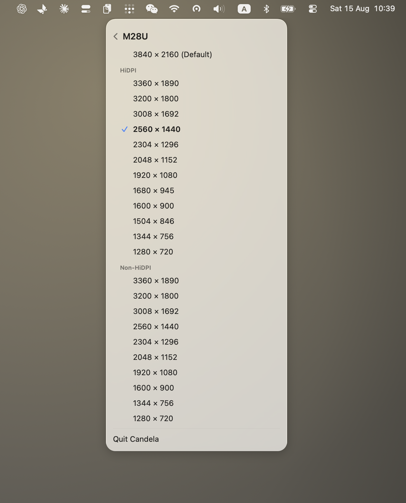

How to enable HiDPI on a Mac
The short version: HiDPI means macOS renders the interface at 2× and scales the result down, which is what makes text look sharp on a Retina screen. macOS enables it automatically on Apple displays and on some third-party ones, and hides it on the rest. Turning it on takes one switch in Candela, an administrator password, and one screen flash.
What HiDPI actually is
Every element on screen has a logical size — a menu bar is 24 points tall whether the display is dense or not. HiDPI draws each of those points as a 2×2 block of pixels, so the same interface is described with four times the detail. Curves get smooth edges, text gets real letterforms instead of approximations.
The important part is the ratio. When the rendered image is scaled to the panel by a clean factor, every pixel lands on a pixel. When it is scaled by 1.5 or 1.33, glyph edges land between pixels and get averaged, which is the soft look people describe as blurry.
So HiDPI is not "higher resolution". It is rendering at a size the panel can reproduce without guessing.
Why macOS hides it
macOS decides whether to offer HiDPI modes from the display's EDID — the description a monitor sends about itself, including its physical size. From that it computes a pixel density and decides whether the display is "Retina class".
A 27-inch 1440p monitor works out at about 109 pixels per inch, comfortably under the threshold, so macOS offers only 1× modes. A 27-inch 4K monitor at about 163 ppi is over it, and gets HiDPI — but only the modes Apple chose to expose, which usually means one that is too large and one that is too small.
Some monitors also report their physical size incorrectly, which pushes a display that should qualify below the line.
None of this is a setting, and there is no checkbox in System Settings.
Turning it on
With Candela
- Download Candela and open it. It lives in the menu bar.
- Click the monitor you want in the panel.
- Turn on Smooth scaling.
- Enter your administrator password when macOS asks, and expect the screen to flash once — the display list is being rebuilt.
- Open Resolution and pick from the new modes.
The full mode list is a page of its own, with every resolution the display can take and the sharp ones marked:

The manual route
There is a long-standing approach involving a display-override plist under
/Library/Displays/Contents/Resources/Overrides, keyed by the monitor's vendor and
product ID, which declares the scaled modes you want. It works, and it is worth
knowing that it exists, but it means disabling SIP on modern macOS, hand-editing a
plist, and redoing it whenever you change monitors. That is why tools exist.
Which resolution to pick
A 27-inch 1440p display has three sensible HiDPI options:
| Looks like | Rendered at | Result |
|---|---|---|
| 1280 × 720 | 2560 × 1440 | Perfectly sharp, very large |
| 1706 × 960 | 3412 × 1920 | Sharp, comfortable — the usual choice |
| 2048 × 1152 | 4096 × 2304 | Sharp, small; costs the most GPU |
On a 27-inch 4K display, "looks like 1920×1080" is the native 2× mode and the sharpest possible; "looks like 2560×1440" is the popular compromise.
Try the middle option first. Read a paragraph, then try one step in each direction — this is a comfort judgement, not a correctness one.
The costs, honestly
GPU and power. Rendering at 4096×2304 to display 2048×1152 is real work. On a laptop on battery, with several displays, you may notice it. If the fans spin up after enabling HiDPI, step down one mode.
Refresh rate. A very high scaled mode can exceed what the connection can carry at your refresh rate, and macOS will silently pick a lower one. After changing resolution, check the refresh rate is still what you expect.
Not every display benefits. A 24-inch 1080p panel does not have the pixels to make HiDPI look better; it will mostly look larger and cost GPU time.
Troubleshooting
No new modes appeared. Some displays need reconnecting after the switch, or the mode list needs a moment to rebuild. Unplug and replug, or check whether a dock is in the chain — some hubs give macOS an incomplete EDID.
Everything is enormous now. The new mode defaulted low. Open Resolution and pick a higher "looks like" value.
It reverted after sleep. Save the configuration as a preset in Candela and apply it after waking; some displays renegotiate on wake and macOS falls back.